IT'S YOUR BOY WITH THE CUPS ★ HOW DO YOU NOT KNOW HIM?? ★ THIS MAN IS DANGEROUS 👀 ★ THE FREE KICK THAT BROKE PHYSICS ★ MESSI WOULD NEVER ★ LEFT BACK · ROCKET LEG · 5 STARS ON THE CREST ★ KEEP SCROLLING, BESTIE ★ IT'S YOUR BOY WITH THE CUPS ★ HOW DO YOU NOT KNOW HIM?? ★ THIS MAN IS DANGEROUS 👀 ★ THE FREE KICK THAT BROKE PHYSICS ★ MESSI WOULD NEVER ★ LEFT BACK · ROCKET LEG · 5 STARS ON THE CREST ★ KEEP SCROLLING, BESTIE ★
A loving (slightly judgmental) intervention for a Brazil fan who (somehow) missed this guy
Roberto Carlos
#3
…and #6
P.S. from me: these were MY numbers as a player too, partly because of him 💛 (and two USWNT legends, circa '96–'99)
The most attacking left-back the game has ever seen. A thunderbolt left foot. A World Cup winner. And the man who scored a goal so impossible that actual physicists wrote a paper about it.
⚠ You're about to become a fan ⚠
▼ scroll, please ▼
📺The film room
Hit play and let it roll, one clip at a time, so nothing fights for your speakers. Tap any title to switch. It starts on mute (browsers insist), so turn the sound up for the commentary, it's half the magic.
Bestie. You're a Brazil fan. This is like loving music and not knowing Beyoncé. It's like being from the Bay and not knowing Too $hort or E-40. Roberto Carlos isn't an obscure deep cut. He's on every "greatest of all time" list, his free kick is in physics textbooks, and he wore #3 at Real Madrid and the iconic #6 for the Seleção for over a decade. Consider this your loving intervention. By the end of this page there are no more excuses. 💛💚
⚽So... who IS he?
Roberto Carlos da Silva Rocha (born April 10, 1973, in Garça, Brazil) is widely called the greatest left-back in football history. He played left defence, but spent his whole career sprinting up the wing like a winger, blasting free kicks, and terrifying goalkeepers. Short, absurdly muscular thighs, and a left foot that could launch a ball at ~105 mph. If you love Brazil, he's non-negotiable. 🇧🇷
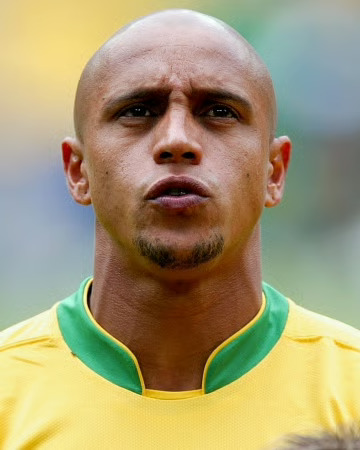
o cara. 🇧🇷
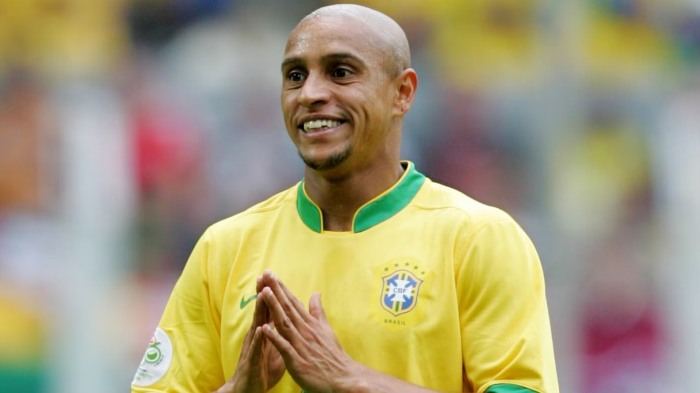
all smiles. 💛
📊The numbers (a.k.a. it's your boy with the cups)
Glittering doesn't quite cover it. Here's the trophy haul of a defender who scored like a midfielder. Casually. 🏆
Three World Cups, and he started nearly every minute of them. A runner-up medal, a winner's medal, and one of the great full-back partnerships ever (him + Cafu, bombing down both wings).
1998
France
Runner-up 🥈
Started all 7 matches, every minute
An engine down the left for a team that reached the final
One of the best left-backs of the whole tournament
Named to the World Cup All-Star Team
Final lost 3–0 to France (the Ronaldo mystery night)
2002
South Korea / Japan
CHAMPION 🥇
Played 6 games (started the final)
Scored a 35-yard free-kick rocket vs China
Named to the All-Star Team again
2006
Germany
Quarter-final
Starter once more for the Seleção
His third consecutive World Cup
Brazil knocked out by France
3
World Cups
18
WC appearances
2
WC goals
2×
WC All-Star team
The 2002 run he won: Brazil beat Germany 2–0 in the Yokohama final, both goals by Ronaldo, his redemption after the heartbreak of '98. Ronaldo took the Golden Boot with 8 goals (the most at one World Cup since 1970), and it was Brazil's record 5th title. Roberto Carlos was right there for all of it. 🇧🇷⭐⭐⭐⭐⭐
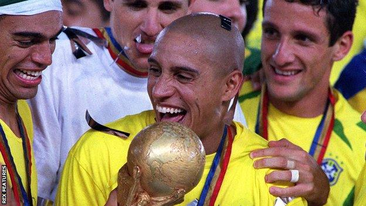
champion of the world. 2002. ⭐
⏳The career, fast
1990–92
União São João & Atlético Mineiro
A teenager from São Paulo state starts making noise in Brazilian football.
1993–95
Palmeiras
Wins back-to-back Brazilian league titles (1993 & 1994). A star is born.
1995–96
Inter Milan
One season in Italy. Scores a 30-yard free kick on his debut (a sign of things to come), but it wasn't the right fit.
1996–2007
Real Madrid 👑
The glory years. 584 appearances, ~70 goals (!), 4 La Ligas, 3 Champions Leagues, 2 Intercontinental Cups. A Galáctico and an icon in white.
2002
World Cup Champion 🏆
Starts every game as Brazil wins the 2002 World Cup in Korea/Japan. The peak.
2007 onward
Fenerbahçe, Corinthians & beyond
Winds down a 20-year career, then moves into coaching. Legend status: permanent.
Eleven seasons in white. A founding Galáctico. For years, he and Italy's Paolo Maldini were simply the two best left-backs on the planet, except Roberto Carlos did it while basically playing as a winger. And get this: Madrid signed him from Inter in 1996 for around €3.5m. Highway robbery.
584
Appearances
~70
Goals (a DEFENDER!)
3
Champions Leagues
4
La Liga titles
2
Intercontinental Cups
11
Seasons in white
⭐ The assist that made history
Champions League final, 2002, Glasgow. On the stroke of half-time, Roberto Carlos lofted a high, looping ball down the left to the edge of the box, and Zidane met it with that left-footed volley into the top corner. It won Real Madrid La Novena (their 9th European Cup) and in 2020 France Football voted it the most beautiful goal in Champions League history.
In his own words 🎙️: Roberto Carlos said the pass was "perfect, on the spot, just high enough, it landed on Zizou's left foot because he wouldn't be able to strike it with his right." A legend setting up a legend.
The trophy years in white: La Liga 1997, 2001, 2003, 2007 · Champions League 1998, 2000, 2002. He's in the Bernabéu pantheon forever, a bona fide Real Madrid legend. 🤍
⚠️Why opponents were terrified
Most teams plan their set pieces to score. With Roberto Carlos lining up, the other team's whole plan was just to survive his. A free kick or corner in his range wasn't a chance. It was a threat the bench could feel.
🚨 The scouting report on a free kick from 30+ yards
💥 Pace that's barely fair. His strikes were clocked around ~105 mph, and keepers literally couldn't react in time.
🧱 The wall didn't help. He bent it around the outside, or drove it so hard and flat it punched through gaps.
🧤 Goalkeepers guessed and prayed. Diving early was the only option, and often the wrong one.
📋 Coaches game-planned for HIM. Give away a foul anywhere near the box on the left, and you'd just handed the danger man a shot.
And on corners & set-piece delivery: that same cannon left foot whipped balls in so fast and flat that defenders couldn't clear them cleanly and keepers couldn't come collect. Whether he shot it or crossed it, a dead ball near Roberto Carlos was bad news. The fear was the point. 😱
If your friend only learns one thing, make it this. France, 1997, the Tournoi de France in Lyon. Roberto Carlos lines up a free kick from 35 metres out...
The goal that broke physics
He smashed it with the outside of his left foot, sending the ball way wide of the goal, so far that a ballboy behind the post ducked. Then, at the last second, it violently bent back and snuck inside the post. The French keeper, Fabien Barthez, didn't even move.
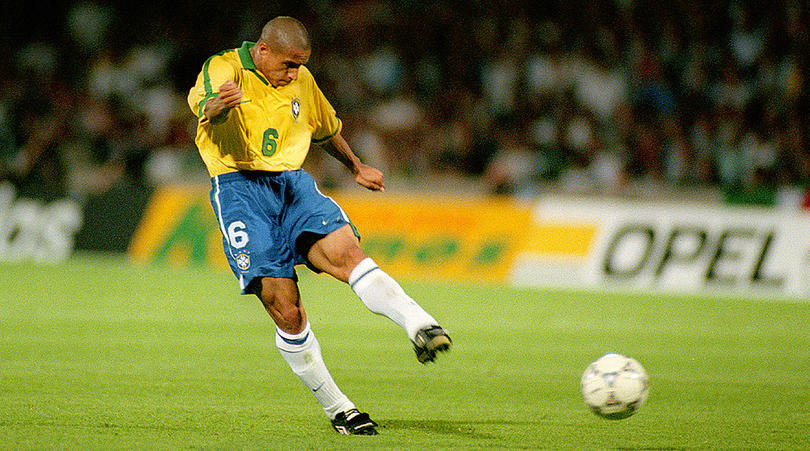
the windup. 🚀
🥅🧍🧍🧍⚽GOOOL!
The science 🤓: In 2010, French physicists at École Polytechnique studied it and concluded it was no fluke. By striking it hard with heavy spin, the ball followed what they called a "spinning ball spiral": as it slowed down through the air, the spin took over and the curve got tighter and tighter, like a snail shell. Most curling free kicks happen over 20–25m. Carlos did it from 35m, which is why it looks impossible. Read the paper ↗ (Dupeux, Le Goff, Quéré & Clanet, New Journal of Physics, 2010).
Why it bends so late 🌀: a spinning ball gets shoved sideways by the Magnus effect. The spin drags air faster past one side, pressure drops there, and the ball veers toward the low-pressure side. That push depends on spin times speed. Over the flight, drag bleeds off the speed fast while the spin barely fades, so the turning radius (roughly speed ÷ spin) keeps shrinking. Early on the path looks nearly straight. As it slows, the curve tightens into a spiral and snaps in. The 35m wasn't a flex, it was the requirement: only from that far does the ball have room to slow into the tight part of the spiral before it reaches the net. From 20m it arrives still in the gentle phase, a pretty banana but no vicious hook.
Same kicker, same goal, different distance. The pink path is the "spinning ball spiral": wide enough that a ballboy ducked, then it hooks home. Turning radius ≈ speed ÷ spin, and drag keeps shrinking the speed.
…and he was a LEFT BACK. A defender. Doing this. Messi would never. 💅 (respectfully.)
🦵Thigh Appreciation Station
★ scientifically, those are enormous ★
Look, we did the polite thing and led with the trophies. But you cannot launch a ball at 105 mph from a standing start with normal human legs. Physicists studied the free kick. Nobody's been brave enough to study these. Each thigh allegedly has its own postal code, its own weather system, and a restraining order from at least one goalkeeper. Please observe the engine room:
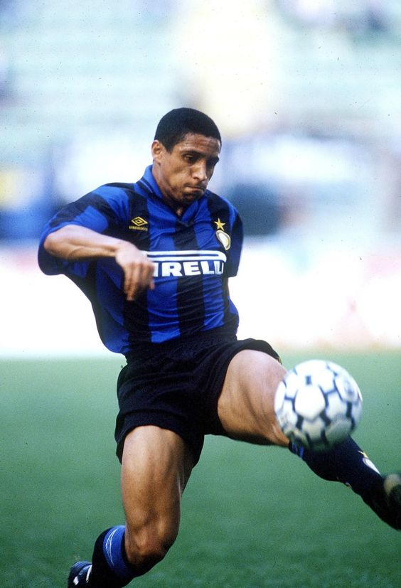
even the ball looked nervous. 😬
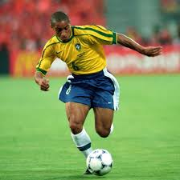
powered by pure quadricep. ⚡
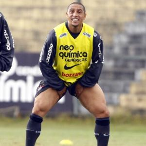
leg day was every day. 💪
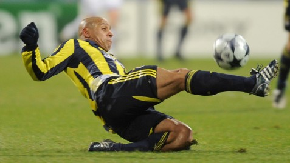
physics class, live. 🧪
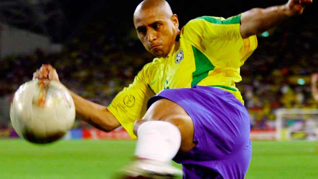
the 105 mph starts here. 🚀
"Roberto Carlos can cover the entire left wing all on his own."
— Vicente del Bosque, his manager at Real Madrid
🗣️Don't take my word for it
Here's what the people who actually had to share a pitch with him (or try to stop him) said:
"I played in a friendly in Japan against him when he was a young lad. I remember this kid running up and down the left wing. It was unbelievable. I said, 'We've got to find out who that kid is, let's try and buy him.' It turned out his name was Roberto Carlos. They said, 'He's not for sale.'"
— Gary Lineker, England striker
"His left leg seems to be made of iron. He had a fantastic shot, but thankfully I never stood in the wall when he took a free kick. If one of Carlos's shots hit you on the head it could quite easily cause physical damage!"
— Jaap Stam, Manchester United defender
"When I first met him at Inter, I thought wow. Firstly, I couldn't believe how big his legs were, you can see that in the way he strikes a ball. He had great pace up and down the line, he could tackle, score, and he was an incredible player."
— Paul Ince, his Inter Milan teammate
"Roberto Carlos is amazing. He's a brilliant defender, but his biggest strength is his ability to get from box to box all the time. He's so quick and strong that he's always making you defend. And he can be lethal from set pieces too."
— Ryan Giggs, Manchester United winger
"Like Cafu, he made people rethink the role of a full-back in a team. Great on the ball, made good runs, but also great dead-ball delivery. Fantastic."
— Michael Owen, England striker
"He's a fantastic player, with amazing skill, and does things at left-back that no other player in that position would contemplate."
— Henrik Larsson, Sweden striker
"As well as being one of the best free-kick takers ever, he is also one of the finest left-backs ever. So important to all of Real Madrid's Champions League wins."
Roberto Carlos didn't do it alone. For Brazil and for Real Madrid he lined up next to some of the greatest players football has ever produced. You take one look at this list and go: yeah, that's not fair. Meet a few of them:
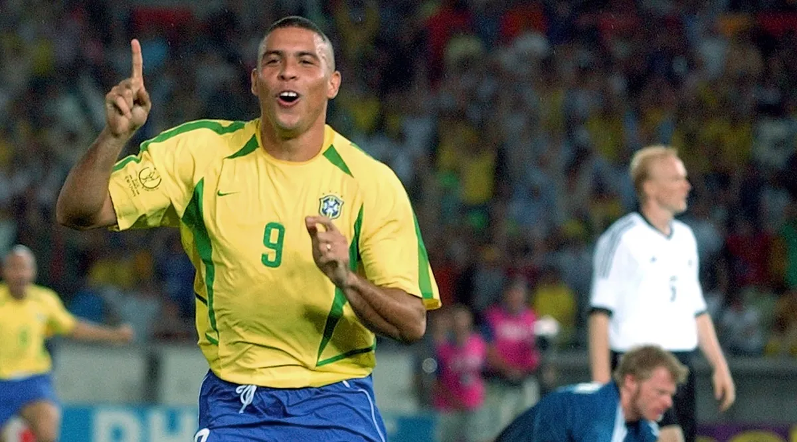
Striker
Ronaldo
"O Fenômeno" (R9)
Possibly the greatest pure striker ever. A force of nature before injuries, and unstoppable after.
2× Ballon d'Or (1997, 2002)
2× World Cup winner (1994, 2002)
62 goals in 98 games for Brazil
Won the 2002 Golden Boot with 8 goals
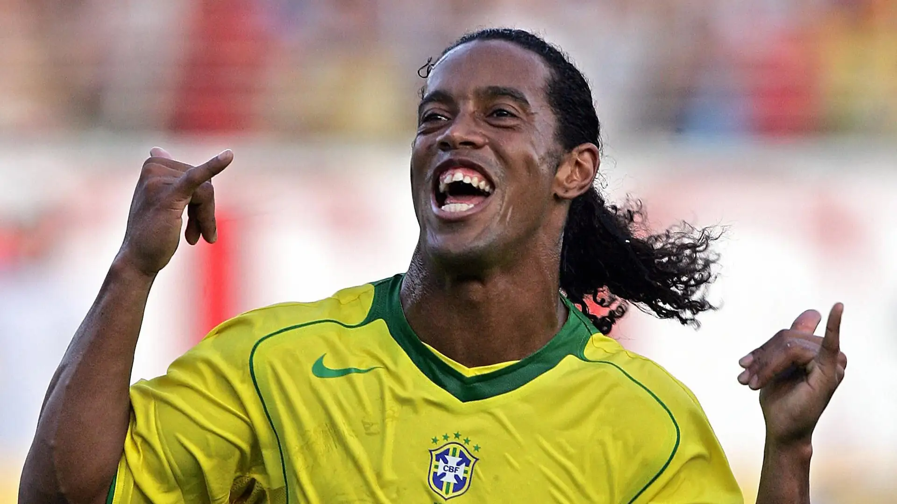
Attacking mid / forward
Ronaldinho
"Gaúcho," pure joy
The most fun footballer of his generation. Tricks, flicks, and a permanent smile. Made football feel like a playground.
1× Ballon d'Or (2005)
2× FIFA World Player of the Year
2002 World Cup winner
33 goals in 97 games for Brazil
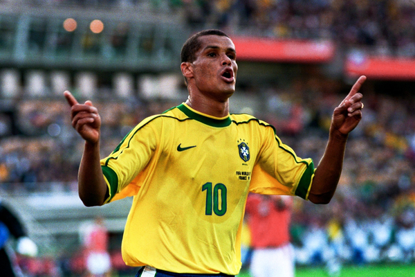
Forward / playmaker
Rivaldo
the third "R"
Left foot of a magician. With Ronaldo and Ronaldinho he formed the famous "Three R's" attack of 2002.
1× Ballon d'Or (1999)
2002 World Cup winner
Named to the 2002 World Cup All-Star team
Master of the bicycle kick & the impossible goal
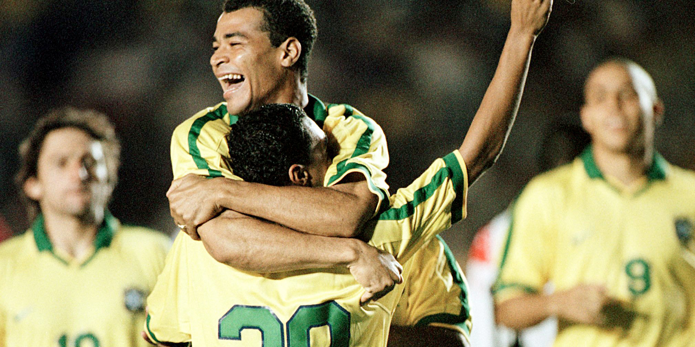
Right-back
Cafu
"O Pendolino," the express train
Roberto Carlos's partner on the other flank. Together they were the most attacking full-back pairing on earth.
Only player to appear in 3 straight World Cup finals
2× World Cup winner (1994, 2002)
Captain who lifted the 2002 trophy
Most-capped Brazilian outfield player ever (142)
Forward / captain
Raúl
"El Capitán," the Bernabéu's soul
Real Madrid's icon and longtime captain through the Galáctico years, right alongside Roberto Carlos. Ice in his veins in the box.
Real Madrid's all-time top scorer for years (323)
6× La Liga, 3× Champions League
Spain's record scorer of his era (44)
The armband, the soul of the Bernabéu
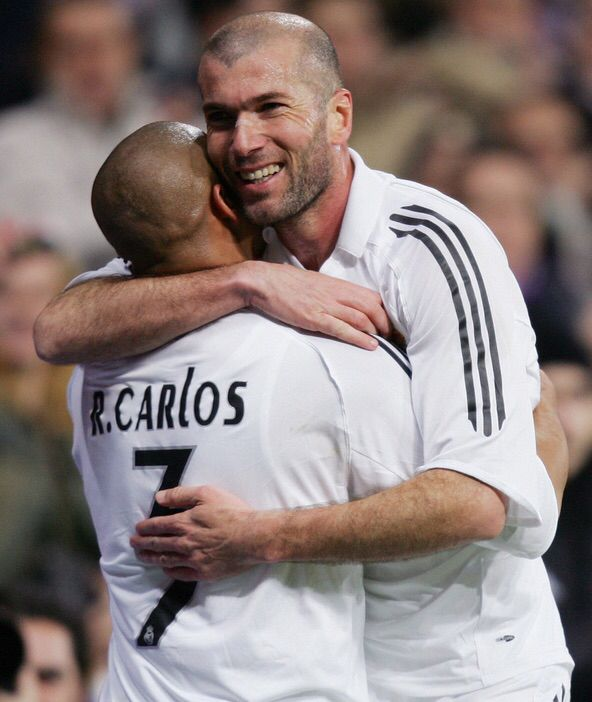
Attacking midfield
Zidane
"Zizou," pure elegance
The most graceful midfielder of his era and a Galáctico teammate. Roberto Carlos's looping cross set up that volley in the 2002 final.
For ~10 years, if Ronaldo or Ronaldinho scored for Brazil, he was almost certainly on the pitch. From roughly 1997 to 2006, Roberto Carlos was a near-permanent starter for the Seleção (125 caps in total), bombing down the left while the attackers did damage. So while he wasn't there for their club goals, at national-team level he was on the field for the overwhelming majority of the goals both legends scored. That golden generation was tight-knit. 🇧🇷
Wait, was his number #3 or #6? Both! He wore #3 at Real Madrid, but for Brazil he wore #6. Here's the fun part: in the traditional Brazilian shirt-numbering system, the full-backs aren't 2 and 3. They're #2 (right-back) and #6 (left-back), with the center-backs taking 3 and 4. So the iconic "6" on his yellow shirt is just Brazil doing things the Brazilian way. (Marcelo later inherited the same #6.) ⚽
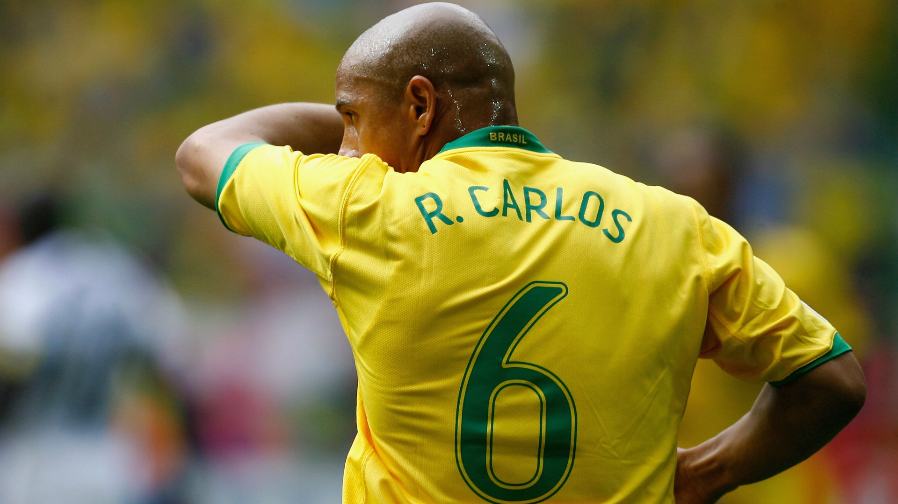
the famous 6. 🇧🇷
🎽Why I switched between 3 & 6
Okay, personal note from me (the friend forcing you to learn this 💛): I wore #3 and #6 across my playing days, and it was never random. Both are classic defender numbers, worn by people I idolized, and Roberto Carlos ties the whole thing together, because he wore both too.
3
the number
Roberto Carlos, his #3 at Real Madrid
Christie Rampone (Pearce), USWNT #3 since 1997, Hall of Famer & ironwoman defender
6
the number
Roberto Carlos, his #6 for Brazil (the Brazilian left-back number!)
Brandi Chastain, USWNT #6, scored the World Cup-winning penalty in 1999
So when you see me in a 3 or a 6, that's the lineage: a Brazilian rocket-legged genius and two USWNT icons who changed the game. 🇧🇷🇺🇸
📍Where is he now?
He hung up the boots in 2015, but he never really left the game. These days Roberto Carlos is a global ambassador for Real Madrid, carrying the club's history around the world. Through the 2026 World Cup he's been on punditry duty too, breaking down Brazil's run and backing Carlo Ancelotti's side to go deep. And since 2019 he's been the global ambassador for Football for Friendship, an international kids' programme that uses football to teach cooperation, respect, and equality across cultures. Still bending the game, just from a different angle now. 🤍
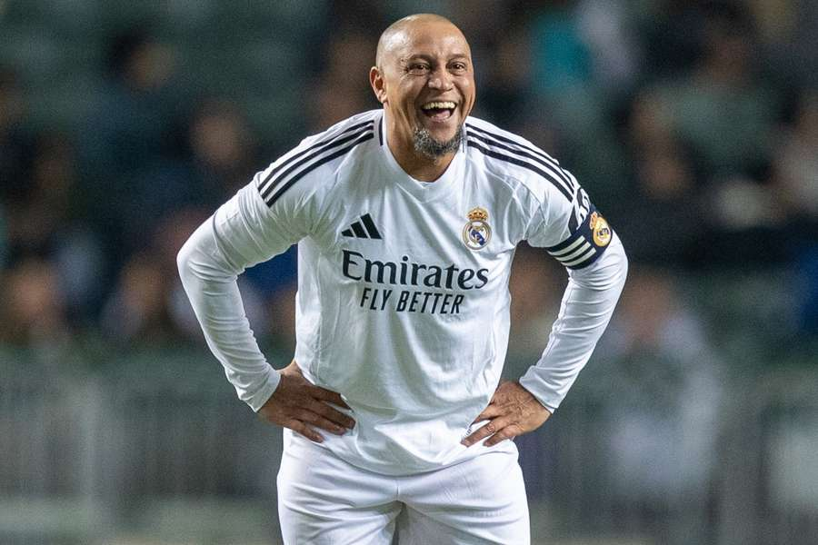
the ambassador era. 🤍
📸The scrapbook
A few more of him just being him. Scroll sideways. 👉
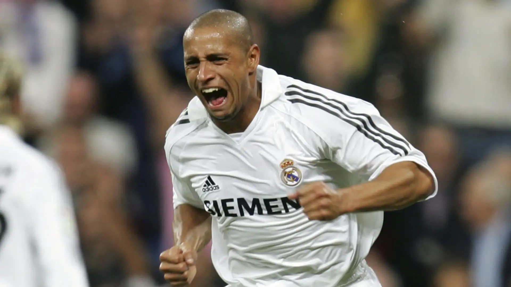
Madrid, all in white. 🤍
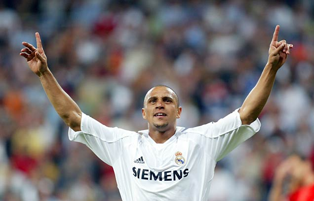
another one. obviously. ⚽
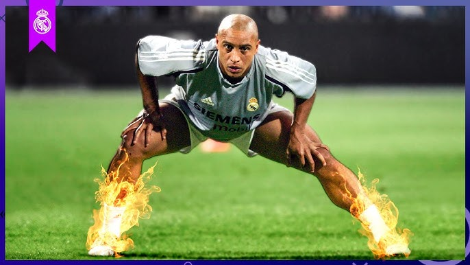
literally on fire. 🔥
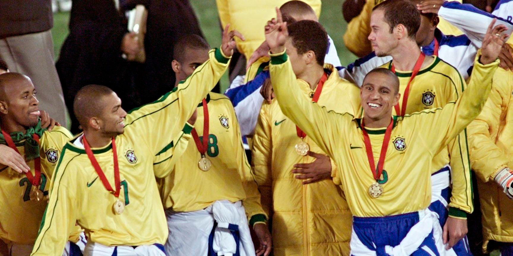
Copa América, 1999. 🏆
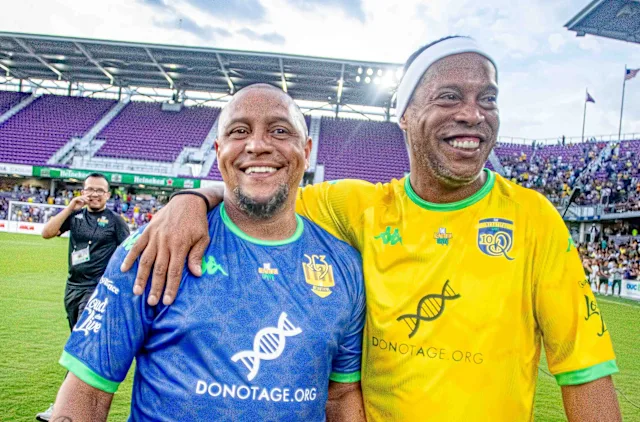
still showing up for the legends games. 💛happiest man in football. 😄
🎓Education Station, bestie
Welcome to the Education Station. Ten questions, no pressure. (There is pressure.) 📝
Roberto Carlos: Crash Course Final Exam
1. What position did Roberto Carlos play?
2. From how far out did he score THAT free kick vs France?
3. Which World Cup did he win with Brazil?
4. Which club defined his career?
5. What number did he wear for the Seleção (Brazil)?
6. How fast was that left foot clocked?
7. Who was his full-back partner bombing down the other flank for Brazil?
8. What did physicists name the path of his France free kick?
9. His 2002 Champions League final assist set up whose famous volley?
10. How many World Cups did he play in for Brazil?
Answer all 10 to get your verdict from Thierry Henry… 0/10